8 Signal Model Interpolation using Normalizing Flows
One of the primary goals of data analysis in collider physics is to test the viability of proposed models for new physics, which attempt to address the shortcomings of the well-tested Standard Model. We’ll call these models the signal. Since we don’t have access to real data from these hypothesized phenomena, we use high-quality simulations of the underlying physics to generate samples that mimic data collected from major experiments, e.g. the Large Hadron Collider. This then lets us identify the most prominent signature that physics process leaves in the data, such as the shape of the invariant mass of some particular final state. We can compare that signature with data generated to mimic the same final state, but with only standard model processes (which we term background), and use this comparison as a mechanism to produce an analysis that could discover the signal if it were present. This can then be applied to real data.
How many models are there to test? In general, there’s no upper limit – arXiv grows thicker every day with more theory model submissions. But what about within a certain class of model with similar free parameters? This scope-narrowing makes our lives much easier, as we’re only now limited by the parameters of the model, e.g. the mass of a new particle. One could then imagine testing each possible value for this new mass… until we realize that there’s only so many times we can do this. Recall that simulating data is in general expensive, and we’d rather avoid it where we can. Moreover, if we have a multi-dimensional parameter space to explore, covering that in an efficient way will be prohibitively expensive to simulate. How do we get around this?
Well, if we’re interested in some signature from the model in a particular set of variables, we could generate that data for a set of parameters, then find some way to interpolate between them. Specifically, this can be viewed as trying to estimate the probability density (or shape) of a variable of interest, where we want to condition on the physics parameters involved in the generation of that shape. This is the approach taken here.
It’s worth noting that physics analyses typically don’t interpolate on the level of the statistical model, and instead just interpolate the result of the search itself, e.g. in the space of \(p\)-values or on limits for the signal strength \(\mu\) across a grid of e.g. different signal masses. This is often quoted without error (a different issue), and does not take into account the fact that we’d expect to be less sensitive to new physics in the regions that we don’t have high-quality simulations for. However, if one can interpolate the signal model in some way before calculating the final result, then incorporate a predictive uncertainty from that interpolation into the statistical treatment of the data, we should hopefully be able to have a more grounded representation of our sensitivity between simulated signal model points.
8.1 Problem statement
Say a simulated signal process outputs a set \(\mathbf{x}\) of per-event physics quantities (or observables), where each quantity is typically a real number (e.g. kinematics). We’re interested in making a statistical model of this process, and so take interest in the distribution over \(\mathbf{x}\), which we’ll denote \(p_s(\mathbf{x} | \theta)\), with \(\theta\) representing the free parameters of the physical model (and \(s\) standing for signal). We can partition \(\theta\) as \(\theta = [\phi, \nu]\), where \(\phi\) effectively parametrizes the hypothesis of the new physics model (e.g. through the mass of a new particle), and \(\nu\) represents parameters that are needed to specify the physics conditions, but are not of interest (e.g. a jet energy scale). We focus on conditioning with respect to \(\phi\) here, and leave treatment of \(\nu\) as part of the statistical modelling process (see Section 3.2.2 for more on this).
We don’t have a way to calculate this density due to our inability to access the implicit distribution defined by the simulator, but we do have access to the samples themselves (at some finite number of values of \(\theta\)). This means we can empirically estimate the distribution in some way, provided we have the right tools to do so. If successful, we’re free to directly use this empirical estimation of \(p_s(\mathbf{x} | \theta)\), but in practice, we’re often faced with an additional modelling constraint: many analyses in collider physics operate using histograms of observables, and construct a statistical model based on that. As such, it would be desirable if we could find a density estimator that:
- allows for the conditioning of side variables (here, this would be conditioning on \(\phi\))
- has a tractable likelihood (e.g. for direct use in “unbinned” analysis)
- can model discrete densities like a histogram
- or, optionally, allow the generation of samples that can be histogrammed later
- (optionally) comes with a notion of uncertainty
This brings us to normalizing flows!
8.2 Normalizing flows (recap)
A much more extensive motivation for normalizing flows can be found in Section 6.3, but we’ll recap the main points here.
Normalizing flows are a class of density estimation technique, which attempts to transform a designated base density into a *target density with the aid of neural networks. This admits the ability to sample from a flow, since you can just transform the samples from the base density, which is usually of simple form (e.g. normal distribution). Moreover, flows have a tractable likelihood, which can be evaluated by transforming the samples using the learned transform, putting that into the base density, and multiplying by the relevant Jacobian, effectively bending the space into the desired shape to mimic the target density.
To train a flow, we simply fit samples from the base distribution to the training samples such that the negative log-likelihood of the flow model is minimized. This is done across batches of different training data, just as in standard machine learning optimization.
All of the properties of a flow satisfy most of the bullets above for our criteria, but we’re still missing two parts: conditioning and uncertainty. These are addressed in the following sections.
8.2.1 Implementing conditional density estimation
A few different types of models allow for conditional density estimation, e.g. RealNVPs (Dinh, Sohl-Dickstein, and Bengio 2016), MADE (Germain et al. 2015), and masked autoregressive flows (MAFs) (Papamakarios, Pavlakou, and Murray 2017) – we focus on the latter as the choice for this task. Details on the precise implementation of a MAF can be found in Section 6.3.2.
8.2.2 Estimating predictive uncertainty
If we’re using the likelihood (or a histogram of the samples) to make a prediction using the flow, we don’t have a natural way to produce a corresponding uncertainty on that prediction. One way to get around this fact is to take inspiration from the notion of model ensembles (see a review in (Ganaie et al. 2021)), which combine multiple predictive models into one by averaging their predictions at a given point, then providing an uncertainty through the sample standard deviation across those predictions. The intuition behind this is that one would expect models to have the most mutual variance in the region where there is no training data, as that lies outside of the context that the models learned. There’s no particular way in which one needs to form the different elements of an ensemble for it to have some reasonable utility, but one common strategy in the land of neural networks is to train a few models with different weight initializations, and use those as the models to make up the ensemble. This approach is what we do here: both with the likelihood functions, and with the histogram yields produced from samples of those flows.
8.3 Example 1: Following the mean
To test out the MAF as a conditional density estimator, it suffices to model some family of distributions parametrized by some context \(\phi\), just as we set out in the problem statement. One thing I thought of when considering this is a 2-D normal distribution, where the mean represents the context. This should be a simple starting problem, and is a similar use case to that which I encountered in a physics context, where the signature left in the invariant mass spectrum clustered around the value of the rest mass of the particles that produced it. We’ll add more complexity to this later.
We’ll start by sampling a range of normal distributions with different means and unit covariance. The means here are the context – the thing we’ll condition on during training and inference. Training data will then consist of pairs of samples from these distributions, and the mean of the distribution that generated the samples. We’ll also split the different distributions up into context points that are used for training, and unseen points that are used for validation and testing (in practice, these should be two distinct tasks, but we’ll combine them for these examples to portray the proof-of-concept in a best-case way). Points in the test set are not seen during training; we use them purely to assess performance (and select a good model) when interpolating to a context not seen before.
As a small note here, we also hold out a small number of examples (20% per point) from the training set to use as additional validation in conjunction with the unseen context points. These together are referred to as the “valid” set in the loss curve plots, and are used only for model selection purposes, including making sure we’re not totally biasing our selection to the small number of unseen context points (we want to make sure performance on the whole grid is maintained). This is a hyperparameter that could be played with, or discarded altogether. More discussion on this can be found later on.
The distributions chosen are shown in Figure 8.1, where 49 different means have been evenly selected across a grid of points, indicated by crosses colored by the set they belong to. Note that the test set points are chosen such that they’re all inside the grid – this is because we’re seeking to interpolate our results within the region we have data as opposed to extrapolate outside of it.
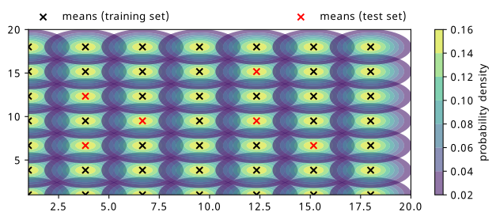
10,000 points are then drawn from each distribution, and 3 MAFs are trained on the same training data, but with different weight initializations. The hyperparameters for training those MAFs are as follows:
- Batch size of 4000 points
- 10 layers of linear, autoregressive transforms
- Each transform’s neural network has one hidden layer of 6 neurons
- Adam optimizer with a learning rate of 1e-3
- 3000 iterations total (common reasonable plateau point for all examples)
During training, the inputs and context are each scaled to standard normal distributions through fitting a StandardScaler from Scikit-Learn (Pedregosa et al. 2011) to the train data. Any samples produced from the flow are then transformed back using this same scaler. Training was done using the nflows software package (Durkan et al. 2020), which builds on PyTorch (Paszke et al. 2019).
It’s worth noting that since we trained three MAFs, when I refer to the “flow” in later sections, I’m referring to the ensemble of all three models, where their predictions (either likelihoods or histograms) are averaged together, and their predictive uncertainty is the corresponding standard deviations.
We can examine the results of the training through different types of visualizations, as we’ll see below:
8.3.1 Loss curves
See Figure 8.2 for a comparison of the negative log-likelihood loss for train and test sets. This is for just one of the three flows, and shows the similarity of the train and test losses due to the fact that the train and test data are so similar (there’s not much domain shift needed, just learning the position of the mean).
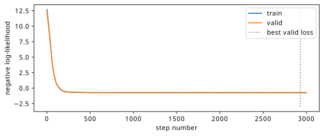
8.3.2 Distribution similarity
It’s illustrative to plot the likelihoods learned by the flow for each of the context points, including the ones for which we didn’t see during training. We could, in theory, supply any value of the context for this evaluation, but it’s much more useful to do it in the region that we have test data so we can compare the result.
We can find this plot in Figure 8.3, where the plot from Figure 8.1 is shown as a comparison metric side-by-side. We can immediately see that the likelihood shapes are about what we’d expect, but we note the contours are coloured in log scale for the flow, which is done so to enhance visibility of the shape close to the mean, since the contours increase more rapidly in value around the center of the distribution. Additionally, the values of the normalization are much higher for the flow, which can be attributed to the fact that the training data is very concentrated around the mean, and so a distribution with all it’s density there will quickly give a good solution, as opposed to distributing that over a larger range in a more diffuse way. This could likely just be due to the training data being capped at 10k points.
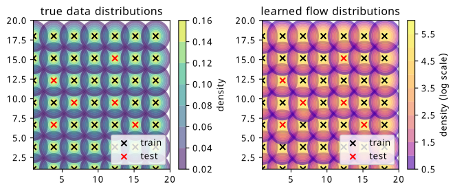
This is a nice visual check, but it’s probably more useful to quantify this similarity in some way.
8.3.3 Histogram similarity
Since we’re interested in possibly using the result as a histogram, we can directly compare histograms of samples from the flow with histograms of the original data. Plots of the raw data versus flow differences can be found in Figure 8.4 for training points, and Figure 8.5 for test points. The plots are made using a histogram of the whole dataset for each context point (10k data points in total per histogram) versus a histogram of 100k samples conditioned on the same context points from the flow to get the overall shape, which is then re-normalized back to 10k overall counts. The x-y axes are omitted for a cleaner plot, but the histogram range is around +/- 2.5 in each direction about the mean (imagine a square around one of the distributions in Figure 8.1).
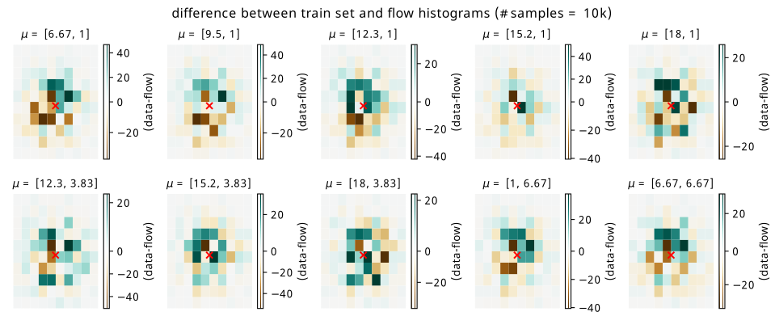
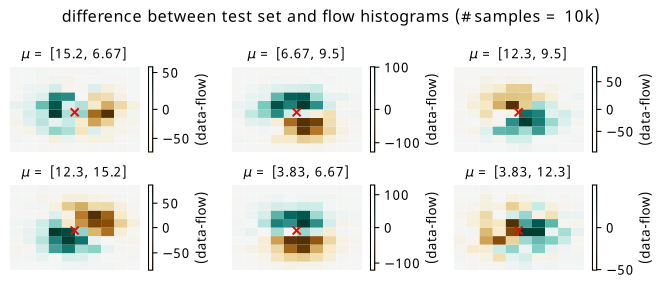
The main thing we can get from this visualization is the imprint that subtracting the flow histogram from the data leaves. We can see this more prominently in Figure 8.5, where there are some biases left from the flow network getting the area around the mean slightly off. Green represents where the data counts are larger, and brown represents where the flow predicts larger counts. The scale of the colorbar in each case is worth noting – for a histogram of size 10k, these are relatively tame differences, but differences nonetheless (relative bin-wise differences would also be nice to view, but are inflated somewhat by small bin counts away from the mean).
8.3.4 Pulls
These plots are only half the story; we’d much rather see how the flow uncertainties affect these results. Instead of doing this bin-by-bin where small localized uncertainties make for difficult visualization, we plot the pulls aggregated over all training and test points separately. The pull here for one bin is defined as
\[ \text{pull } = \frac{\text{flow prediction }-\text{ data prediction}}{\sigma_{\text{flow}}}~, \]
where the uncertainty \(\sigma_{\text{flow}}\) comes from the standard deviation of the counts from the three histograms in that bin, which were produced by sampling each flow in turn. Without making any strong theoretical claim, the reasoning to plot this quantity is to loosely follow the intuition behind the central limit theorem, where we assume that the bin counts will tend to a normal distribution in the limit of many repeated experiments. If the flow is a good predictor of the mean of that normal distribution, we’d observe the data being distributed as approximately \(\mathrm{Normal}(\text{flow}, \sigma_{\mathrm{flow}})\). This ballpark statement is somewhat realized in Figure 8.6, where we plot histograms of the pull aggregated across all training contexts (left plot) and testing contexts (right plot).
The results are fairly unbiased in either case, with a spread of pulls being fitted a little wider than a standard normal. Beyond this, it’s clear that if the error in the denominator is of comparable to the difference between data and flow, we’re fairly happy that we know where we’re wrong to some degree. Using this ensemble uncertainty is then a reasonable way to predict the failure modes of the flow for this simple example.
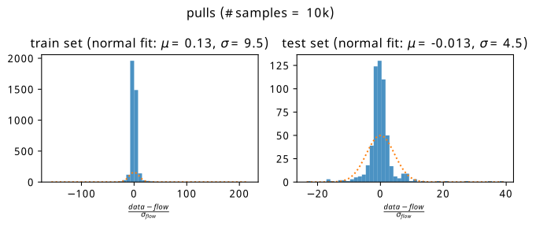
8.4 Example 2: Gaussian firework
We now add a degree of complexity. Keeping with the theme of normal distributions, we’ll let the mean influence the covariance matrix such that the distribution will rotate based on its position relative to the origin. More formally, for \(\mu = [\mu_x, \mu_y]\), this parametrization \(\mathrm{Normal}(\mu, \Sigma)\) can be constructed by the following steps:
\[ \theta = \arctan (\mu_y / \mu_x);~~~r=\sqrt{\mu_x^2 + \mu_y^2} \] \[ \Rightarrow \Sigma = MM^T \text{, where } M = \left[\begin{array}{cc} \cos \theta & \sin \theta \\ -\sin \theta & \cos \theta \end{array}\right] \left[\begin{array}{cc} 1/r &0 \\ 0 & 1 \end{array}\right]~. \tag{8.1}\]
This rather weird formula, found using inspiration from a blog post on a geometric interpretation of the covariance in a Gaussian (Spruyt 2014), applies a rotation and a scaling in proportion to the mean. By generating the same grid of points as in Figure 8.1, we end up with the result in Figure 8.7. I’ve affectionately termed it a Gaussian firework, since it makes a wonderful explosive pattern when plotted symmetrically about the origin, which I additionally show some examples of in Figure 8.8.
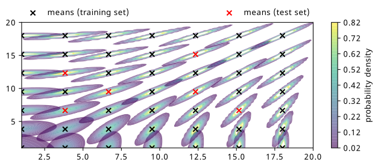
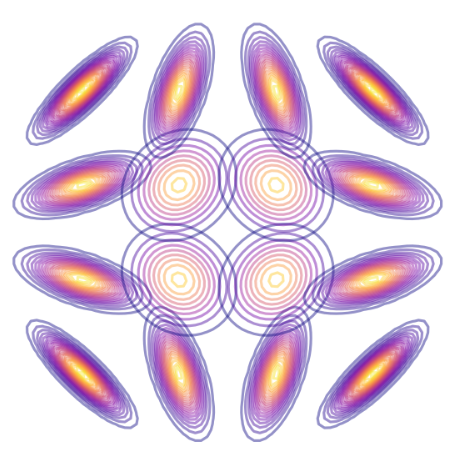
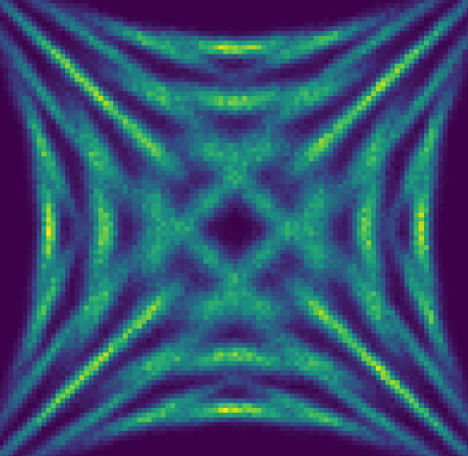
Modelling this firework is more challenging for a couple reasons. The first is that we have some kind of symmetry of rotation that the flow needs to pick up on, using only information from the mean. The second is that the distributions are very tight about their means – a slight mis-guess will show a considerable error when making the same visualizations as in the simple example.
The hyperparameters for the training are the same as the previous example, including the points in the train/test sets, so we jump straight to the results.
8.4.1 Loss curves
See Figure 8.9 for a comparison of the negative log-likelihood loss for train and test sets. Again, this is just one of the three flows for illustrative purposes. We notice that the training stops much earlier, which is due to the fact that the difference between train and test sets is much more significant here, with it being easier to overfit to the training samples alone.
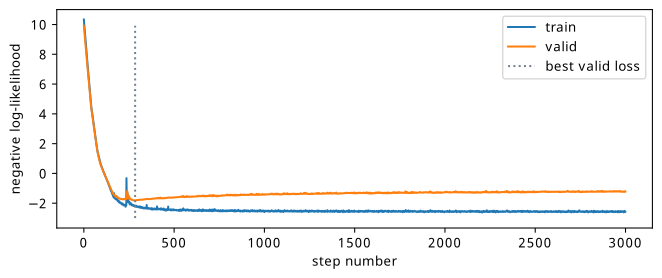
8.4.2 Distribution similarity
We can see the plots of the learned likelihoods from the flow ensemble in Figure 8.10. The topic of the scale difference is exacerbated further, which I’d guess is due to the concentrated nature of the distribution, allowing for the clustering of all the density in one place to quickly achieve a good loss for the training data.
We note the fairly good modelling of the way the distribution shape varies across the training points in particular. The shape of the distribution far from the mean at the unseen test set points (red crosses) is a little less well-modelled, with the mean being slightly off-center sometimes, and the contours not being as even.
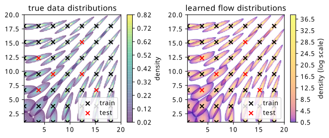
8.4.3 Histogram similarity
Coming again to histograms, we do the same plots as for the first example, beginning with the raw differences in Figure 8.11 and Figure 8.12. The scale of the errors in the training set are equivalent to those in the simple example, but we see that the test errors have some vast differences by comparison. Since the distributions are so concentrated, you can effectively see the flow distribution in brown, and the data distribution in green for the test context points. This example is particularly unforgiving for the biases introduced as a result of the flow not having seen these points, since a slight mismodelling introduces a large error. Additionally, from a shape perspective, the centers are roughly coincident, but the rotation inferred from the context is a little different in most cases.
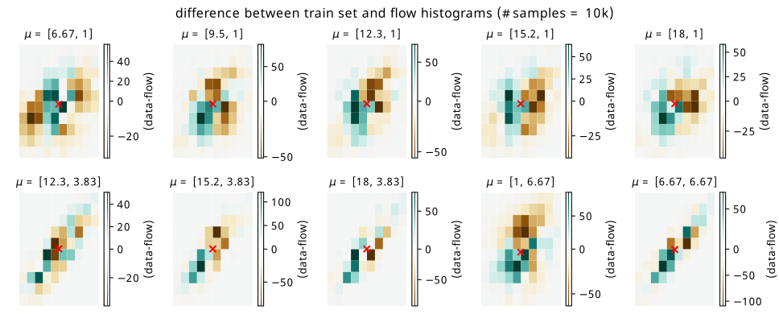
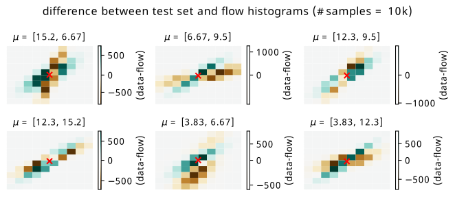
8.4.4 Pulls
Unlike in the simple example, the magnitude of the flow ensemble uncertainty is not great enough to save us in every case when we make the pull plots, which are shown in Figure 8.13. We see that the flow applied to the training distribution is reasonably unbiased in its prediction of the histogram counts, but the test set is far less forgiving – we have some points that are extremely far from 0, due to the flow difference being large and the uncertainty being comparably small.
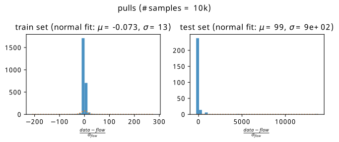
8.5 Discussion
By and large, this method performed fairly well on the two toy examples it was tested on. It’s clear that there is some very deliberate contextual inference, which is found from training in a way that conditions on the parameters that generated the samples, and generates a good proof of context for the viability of this method. This being said, there are definite shortcomings in the test set of the second example, which I’ll address with my thoughts below, including how it’s inherently linked to some of the training methodology decisions, and why I’m not overwhelmingly pessimistic about it.
We can point at many things that could explain the interpolation failure modes in the second example: flow architectures that are too inflexible to model the very concentrated shapes, the limitation of training data points provided (both in number of data points and context grid density), not training with the best hyperparameters (no tuning was done), or perhaps the flow ensemble was too small.
8.5.1 What’s the true “test set”?
Another reason for interpolation failures is that removing the test set points will fundamentally bias the model away from learning to generalize to the points we removed, when we technically had that information to learn from in the first place. This creates a paradox with assuming a train and test split – in what way should we do this? One could think of an example involving vital medical data, where it’s essential to learn from the points provided instead of discounting large numbers of examples for validation.
One way to do this is to just do the train/test split in the data instead of in the context. That would be akin to more standard practice in traditional machine learning, for instance, but neglects keeping a good measure of the interpolation performance. As mentioned previously, there was a notion of a “valid” set that was played with during the examples that does this to some extent already by holding out a small fraction of data from training context points. However, if we did this for all context points, we’d have to blindly trust the flow uncertainty to account for the predictive uncertainty to new points. One could perhaps do some k-fold or leave-one-out cross validation, where the model’s generalization ability could be conservatively quantified by training multiple flows on data with one context point removed, repeating this across all points in the interpolation regime, and quote the ensemble uncertainty or the predicted vs actual error for each of these cases as a better idea of the predictive uncertainty. A caveat to this is that these models are all different to the one that actually would be used in practice, and there would have to also be some kind of secondary interpolation/extrapolation mechanism to produce this cross-validation uncertainty in a continuous way across the context space. These ideas were not tried due to time constraints, but could be the subject of further work.
In the next section, we’ll re-use this method, but we’ll also compare it to statistical uncertainties in the histograms themselves, and see if we do better than just the predictive uncertainty on the flow (not here purely due to time).